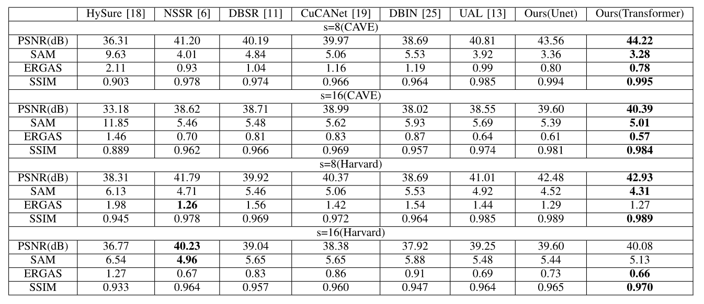
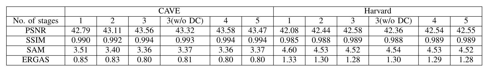
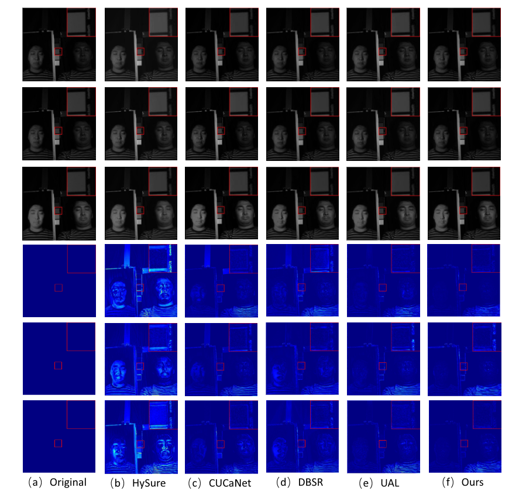
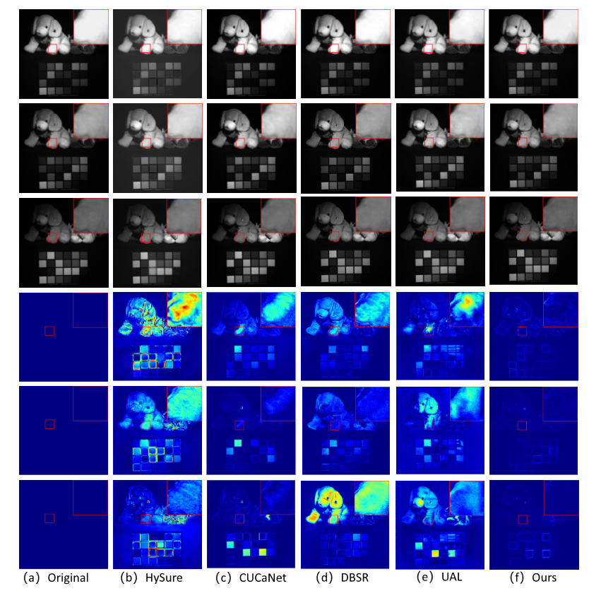
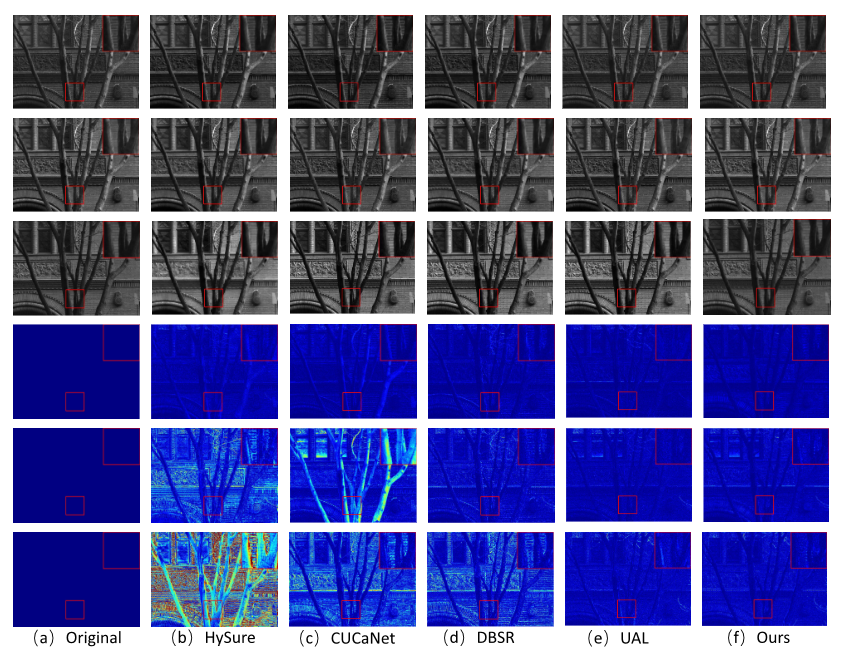

Abstract
In recent years, researchers have become more interested in hyperspectral image fusion (HIF) as a potential alternative to expensive high-resolution hyperspectral imaging systems, which aims to recover a high-resolution hyperspectral image (HR-HSI) from two images obtained from low-resolution hyperspectral (LR-HSI) and high-spatial-resolution multispectral (HR-MSI). It is generally assumed that degeneration in both the spatial and spectral domains is known in traditional model- based methods or that there existed paired HR-LR training data in deep learning-based methods. However, such an assumption is often invalid in practice. Furthermore, most existing works, either introducing hand-crafted priors or treating HIF as a black- box problem, cannot take full advantage of the physical model. To address those issues, we propose a deep blind HIF method by unfolding model-based maximum a posterior (MAP) estimation into a network implementation in this paper. Our method works with a Laplace distribution (LD) prior that does not need paired training data. Moreover, we have developed an observation module to directly learn degeneration in the spatial domain from LR-HSI data, addressing the challenge of spatially-varying degradation. We also propose to learn the uncertainty (mean and variance) of LD models using a novel Swin-Transformer-based denoiser and to estimate the variance of degraded images from residual errors (rather than treating them as global scalars). All parameters of the MAP estimation algorithm and the observation module can be jointly optimized through end-to-end training. Extensive experiments on both synthetic and real datasets show that the proposed method outperforms existing competing meth- ods in terms of both objective evaluation indexes and visual qualities.
Paper & Code & Demo
Experimental Results
Table 1. AVERAGE PSNR, SAM, ERGAS, AND SSIM RESULTS OF THE TEST METHODS ON THE CAVE DATASET AND THE HARVARD DATASET
Table 2. AVERAGE QUANTITATIVE RESULTS OF THE PROPOSED METHODS WITH DIFFERENT NUMBER OF STAGES IN THE CAVE AND HARVARD DATASET AND SCALING FACTOR 8(DC DENOTES DENSE CONNECTION)
Result Visualization
-

Figure 1. Qualitative results of several unsupervised HIF methods performed on photo_and_ f ace in the CAVE dataset at 480nm, 560nm, and 670nm with scaling factor s = 8. Top three rows: resulting HR-HSI imagesat 480nm, 560nm and 670nm; bottom row: heat map of error images by competing methods. (a). The ground truth image; (b).HySure [18] (PSNR = 35.66dB / SSIM = 0.944); (c).CUCaNet [19] [19] (PSNR = 40.58dB/SSIM = 0.987); (d).DBSR [11] (PSNR = 39.79dB / SSIM = 0.978); (e).UAL [13] (PSNR = 42.33dB/SSIM = 0.989); (f). Ours ( PSNR = 42.93dB/SSIM = 0.992).
Figure 2. Qualitative results of several unsupervised HIF methods perform on stu f f ed_toys in the CAVE dataset at 480nm, 560nm, and 670nm with scaling factor s = 8. Top three rows: resulting HR-HSI imagesat 480nm, 560nm and 670nm; bottom row: heat map of error images by competing methods. (a) Ground truth image; (b) HySure [18](PSNR = 33.56dB/SSIM = 0.914); (c) CUCaNet [19] (PSNR = 41.31dB/SSIM = 0.990); (d) DBSR [11] (PSNR = 38.93dB/SSIM = 0.979); (e) UAL [13](PSNR = 39.89dB/SSIM = 0.986); (f) Ours(PSNR = 44.38dB/SSIM = 0.994).
Figure 3. Qualitative results of several unsupervised HIF methods performed on imge6 in the Harvard dataset at 480nm, 560nm, and 670nm with scaling factor s = 8. Top three rows: resulting HR-HSI images at 480nm, 560nm, and 670nm; bottom row: heat map of error images by competing methods. (a) Ground truth image; (b) HySure [18] (PSNR = 34.68dB / SSIM = 0.953); (c) CUCaNet [19] (PSNR = 38.67dB/SSIM = 0.981); (d) DBSR [11] (PSNR = 37.66dB/ SSIM = 0.975); (e) UAL [13] (PSNR = 41.67dB/SSIM = 0.991); (f) Ours (PSNR = 41.99dB/SSIM = 0.994).
Citation
@article{xu2023spatially,
title={Spatially varying prior learning for blind hyperspectral image fusion},
author={Xu, Junwei and Wu, Fangfang and Li, Xin and Dong, Weisheng and Huang, Tao and Shi, Guangming},
journal={IEEE Transactions on Image Processing},
year={2023},
publisher={IEEE}
}
Concat
Junwei Xu, Email: jwxu@stu.xidian.edu.cn
Fangfang Wu, Email: wufangfang@xidian.edu.cn
Xin Li, Email: xin.li@mail.wvu.edu
Weisheng Dong, Email: wsdong@mail.xidian.edu.cn
Tao Huang, Email: thuang_666@stu.xidian.edu.cn
Guangming Shi, Email: gmshi@xidian.edu.cn